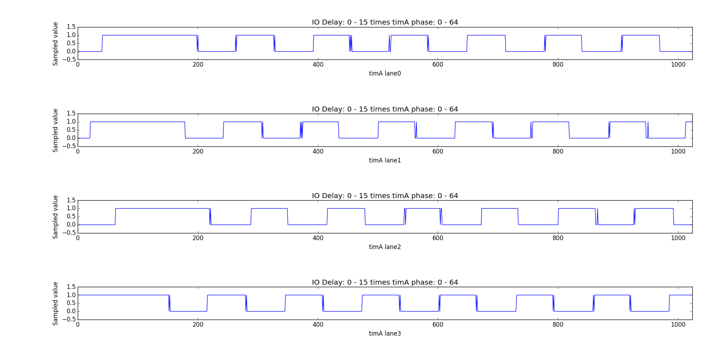
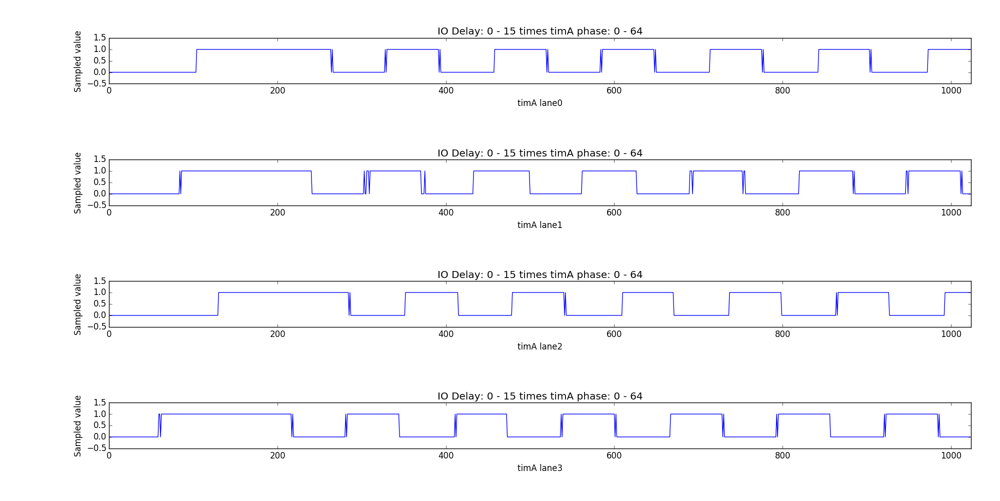
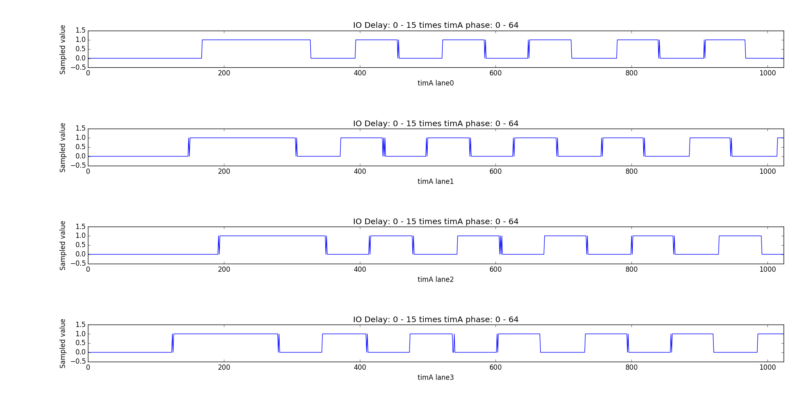
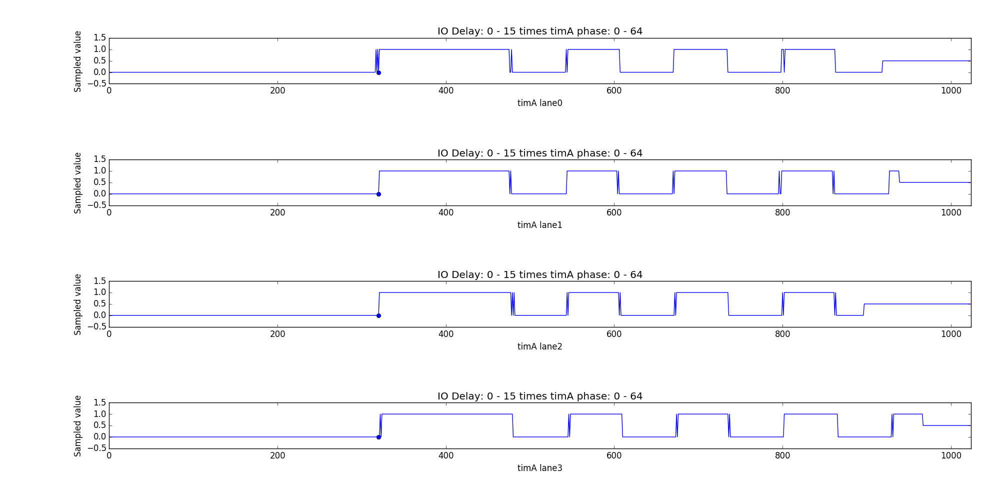
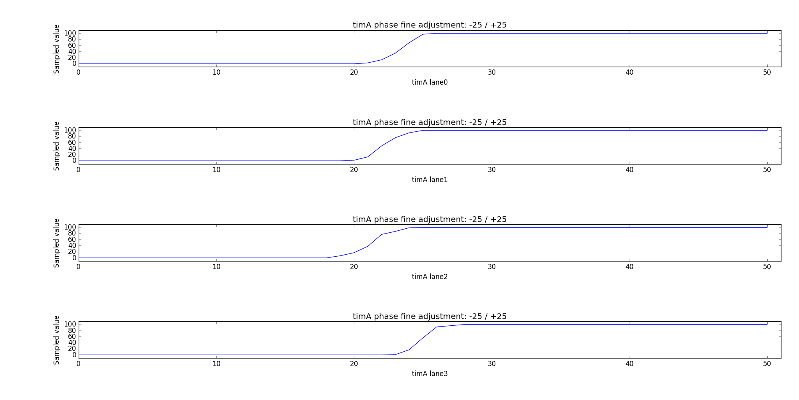

Read training¶
Introduction¶
This chapter explains the read training sequence done on Sandy Bride and Ivy Bridge memory initialization.
Read training is done to compensate the skew between DQS and SCK and to find the smallest supported roundtrip delay.
Every board does have a vendor depended routing topology, and can be equip with any combination of DDR3 memory modules, that introduces different skew between the memory lanes. With DDR3 a “Fly-By” routing topology has been introduced, that makes the biggest part of DQS-SCK skew. The memory code measures the actual skew and actives delay gates, that will “compensate” the skew.
When in read training the DRAM and the controller are placed in a special mode. On every read instruction the DRAM outputs a predefined pattern and the memory controller samples the DQS after a given delay. As the pattern is known, the actual delay of every lane can be measured.
The values programmed in read training effect DRAM-to-MC transfers only !
Definitions¶
| Symbol | Description | Units | Valid region | |———|——————————————————————-|————|————–| | SCK | DRAM system clock cycle time | s | - | | tCK | DRAM system clock cycle time | 1/256th ns | - | | DCK | Data clock cycle time: The time between two SCK clock edges | s | - | | timA | IO phase: The phase delay of the IO signals | 1/64th DCK | [0-512) | | SPD | Manufacturer set memory timings located on an EEPROM on every DIMM| bytes | - | | REFCK | Reference clock, either 100 or 133 | Mhz | 100, 133 | | MULT | DRAM PLL multiplier | - | [3-12] | | XMP | Extreme Memory Profiles | - | - | | DQS | Data Strobe signal used to sample all lane’s DQ signals | - | - |
Hardware¶
The hardware does have delay logic blocks that can delay the DQ / DQS of a lane/rank by one or multiple clock cylces and it does have delay logic blocks that can delay the signal by a multiple of 1/64th DCK per lane.
All delay values can be controlled via software by writing registers in the MCHBAR.
IO phase¶
The IO phase can be adjusted in [0-512) * 1/64th DCK. Incrementing it by 64 is the same as Incrementing IO delay by 1.
IO delay¶
Delays the DQ / DQS signal by one or multiple clock cycles.
Roundtrip time¶
The roundtrip time is the time the memory controller waits for data arraving after a read has been issued. Due to clock-domain crossings, multiple delay instances and phase interpolators, the signal runtime to DRAM and back to memory controller defaults to 55 DCKs. The real roundtrip time has to be measured.
After a read command has been issued, a counter counts down until zero has been reached and activates the input buffers.
The following pictures shows the relationship between those three values. The picture was generated from 16 IO delay values times 64 timA values. The highest IO delay was set on the right-hand side, while the last block on the left-hand side has zero IO delay.
** roundtrip 55 DCKs ** 
** roundtrip 54 DCKs ** 
** roundtrip 53 DCKs ** 
As you can see the signal has some jitter as every sample was taken in a different loop iteration. The result register only contains a single bit per lane.
Algorithm¶
Steps¶
The algorithm finds the roundtrip time, IO delay and IO phase. The IO phase will be adjusted to match the falling edge of the preamble of each lane. The roundtrip time is adjusted to an minimal value, that still includes the preamble.
Synchronize to data phase¶
The first measurement done in read-leveling samples all DQS values for one phase [0-64) * 1/64th DCK. It then searches for the middle of the low data symbol and adjusts timA to the found phase and thus the following measurements will be aligned to the low data symbol. The code assumes that the initial roundtrip time causes the measurement to be in the alternating pattern data phase.
Finding the preamble¶
After adjusting the IO phase to the middle of one data symbol the preamble will be located. Unlike the data phase, which is an alternating pattern (010101…), the preamble consists of two high data cycles.
The code decrements the IO delay/RTT and samples the DQS signal with timA untouched. As it has been positioned in the middle of the data symbol, it’ll read as either “low” or “high”.
If it’s “low” we are still in the data phase. If it’s “high” we have found the preamble.
The roundtrip time and IO delay will be adjusted until all lanes are aligned. The resulting IO delay is visible in the picture below.
** roundtrip time: 49 DCKs, IO delay (at blue point): 6 DCKs ** 
** Note: The sampled data has been shifted by timA. The preamble is now in phase. **
Fine adjustment¶
As timA still points the middle of the data symbol an offset of 32 is added.
It now points the falling edge of the preamble.
The fine adjustment is to reduce errors introduced by jitter. The phase is
adjusted from timA - 25 to timA + 25 and the DQS signal is sampled 100
times. The fine adjustment finds the middle of each rising edge (it’s actual
the falling edge of the preamble) to get the final IO phase. You can see the
result in the picture below.

Lanes 0 - 2 will be adjusted by a phase of -10, while lane 3 is already correct.